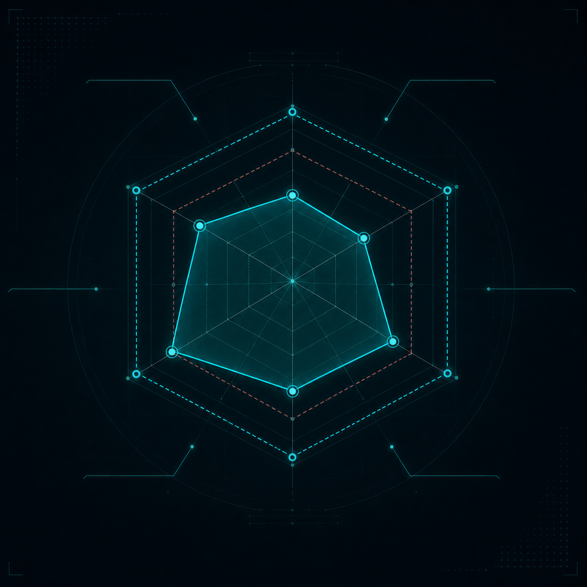
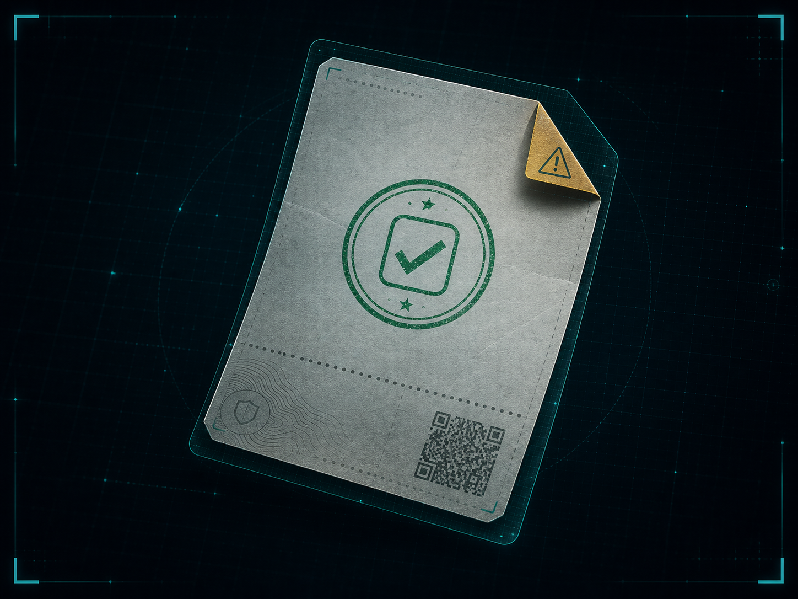
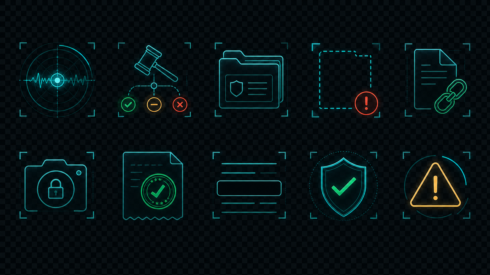

DS / Codex Hybrid Design System
Design System设计系统
Artifact-led design system for the fused Codex hybrid route: token base, canonical bitmaps, component states, and live guard-chain state.
Generated bitmap assets





Palette
accent
ok
warn
danger
redact
Components
readyknown_gapblockedinternal API onlyredaction policy
Live state
{}